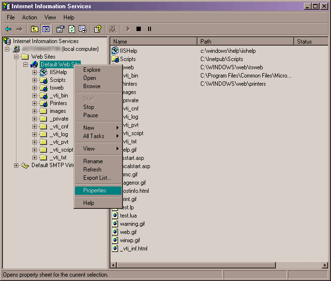
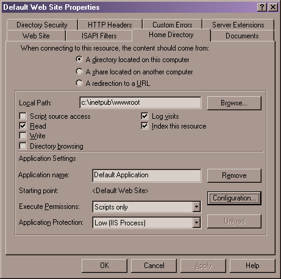

Using Kepler with IIS
Kepler can be used with Microsoft IIS with the following launchers:
Each launching method has pros and cons, you should choose with care the best one for your needs. Note that depending on the Windows and IIS version that you are using, your screen may be slightly different.
ISAPI
The ISAPI launcher usually performs better than the CGI launcher and is the preferred installation on IIS servers.
The first step is to copy all
dependent libraries
to the directory where IIS runs from.
This is usually "%SystemRoot%\system32\inetsrv".
The next step is to map the URL extensions that should be associated with CGILua.
The procedures described below will configure two extension mappings for the
whole Web server. One for .lua URLs and another for .lp URLs.
These procedures can also be executed for a single virtual directory instead
of the whole server.
First open the IIS manager and go to the Default Web Site properties, as depicted below.
Now click on the "Configuration..." button on the "Home Directory" tab:
Then add the two new mappings, ".lua" and ".lp". These mappings must point to
the ISAPI launcher module, cgilua_isapi.dll (you may need to enclose the
launcher path in quotes).
Depending on your system configuration, all the files in <Kepler Home>\bin
may need to be made readable by the IIS anonymous user. Tipically this user is something
like IUSR_MACHINENAME. Keep in mind that this may be not the safest solution.
After the above configuration steps, you should be able to execute
.lp and .lua URLs. The default Kepler configuration
assumes that the web files are located in the <Kepler Home>\web directory
(usually in C:\kepler\1.1\web). Assuming you have a file called
index.lp placed in \web, you should be able to
open the URL localhost/index.lp with your browser.
FastCGI
This part of the documentation is still under development.
CGI
The CGI launcher is the simplest option to deploy a CGILua installation on IIS. It has no external dependencies and runs on every webserver that supports CGI. The main drawback of the CGI launcher is its performance, since usually a new system process is created to handle each request.
There are two ways to install the CGI launcher on IIS, the first is through an
extension mapping and the other is executing the launcher directly. If you use an
extension mapping a typical URL will be like
http://www.mydomain.com/test.lua. If you choose to
execute the launcher directly the URL will be something like
http://www.mydomain.com/kepler/cgi/cgi.exe/test.lua.
Using CGI Extension mapping
The procedures described below will configure two extension mappings for the
whole web server. One for .lua and another for .lp.
These procedures can also be executed for a single virtual directory instead
of the whole server.
First go to the web site properties, depicted below.
Now click on the "Configuration..." button on the "Home Directory" tab:
Then add the two new mappings, ".lua" and ".lp". These mappings must point to
the CGI launcher executable, cgi.exe (you may need to enclose the
launcher path in quotes).
Depending on your system configuration, all the files in <Kepler Home>\bin
may need to be made readable by the IIS anonymous user. Tipically this user is something
like IUSR_MACHINENAME. Keep in mind that this may be not the safest solution.
After the above configuration steps, you should be able to execute
.lp and .lua URLs. The default Kepler configuration
assumes that the web files are located in the <Kepler Home>\web directory
(usually in C:\kepler\1.1\web). Assuming you have a file called
index.lp placed in \web, you should be able to
open the URL localhost/index.lp with your browser.
Executing the CGI launcher directly
Executing the CGI launcher directly exposes the executable name on the URL, but allows the use of Kepler in systems where you don't have the rights to map extensions.
It may be also a good solution for systems where both the CGI and other(s) launchers are used at the same time.
To use Kepler this way, first create a virtual directory that will hold
your application. Let's assume this virtual directory is called kepler
and point to the <Kepler Home>\web folder for example.
Then create a virtual directory for the CGI launcher
(such as /cgi for example),
and point this virtual directory to <Kepler Home>\bin.
You must use use the IIS manager to give execution permission to the
/cgi directory.
Finally test your configuration with a URL like
http://localhost/kepler/cgi/cgi.exe/test.lua, where
the test.lua would be located at your
<Kepler Home>\web directory.